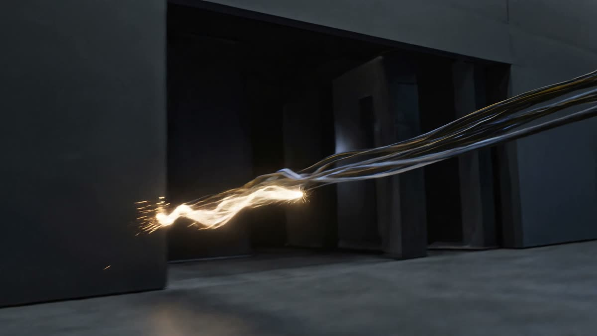
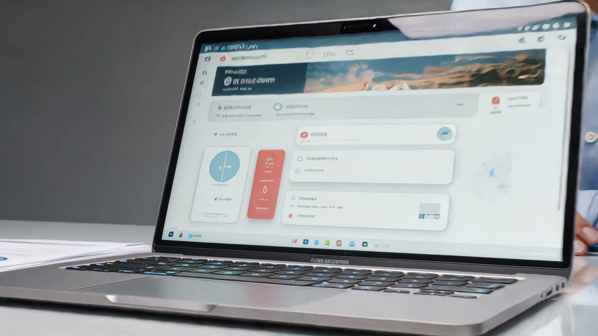

AI-native
AI Integration & Automation
LLM-powered features and workflow automation, built into your product from day one.
From the first architecture decision to the infrastructure it runs on, one team, no handoffs.
LLM-powered features and workflow automation, built into your product from day one.
Web and mobile products built to scale with you, not against you.

Cloud-native deployments, monitored and hardened from day one.

Interfaces people actually want to use, shipped fast.
Different sectors bring different constraints. We’ve shipped through most of them.
Four stages, the same team the whole way through.
We sit with your team, map the real problem, and scope what’s actually worth building first.
Architecture and interface decided together, so the product is fast to build and easy to use.
Short iterations, weekly demos, code you can see landing in a live environment as it’s written.
Launch is the start, not the finish line. We stay on for monitoring, fixes, and what comes next.
Embed our engineers directly into your existing team and roadmap. You direct the work day to day, we bring the hands.
Hand us the problem. We staff, design, build, and ship the whole product, with you reviewing at every milestone.
They didn’t just take the brief and disappear — every week we saw working software, and every version was closer to what we actually needed.
The team felt like an extension of ours from day one. No ramp-up, no hand-holding — just people who knew what they were doing.
We came in with a rough idea and left with a real architecture decision made at every step, not just a pretty prototype.
Communication was the difference. We always knew exactly where the build stood, no chasing status updates.
We work directly with teams across the UK and beyond. Same time zone when it matters, async when it doesn’t.
Tell us what you’re trying to ship. We’ll tell you how we’d build it.